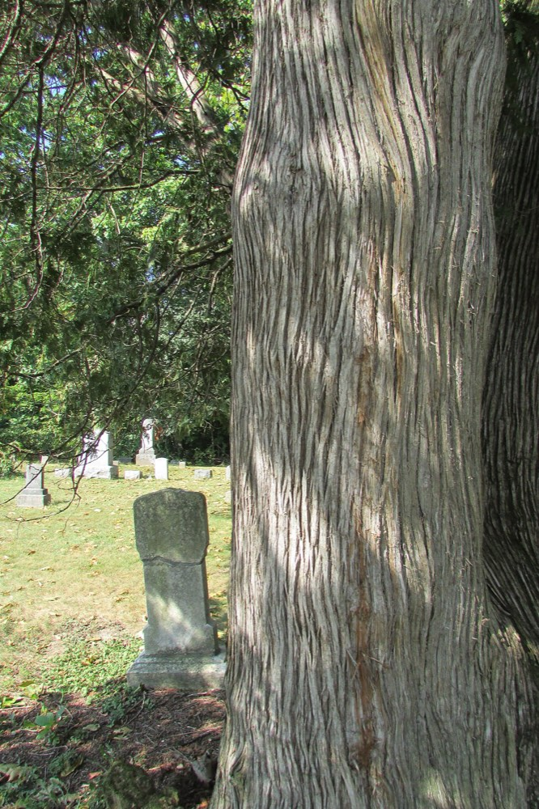
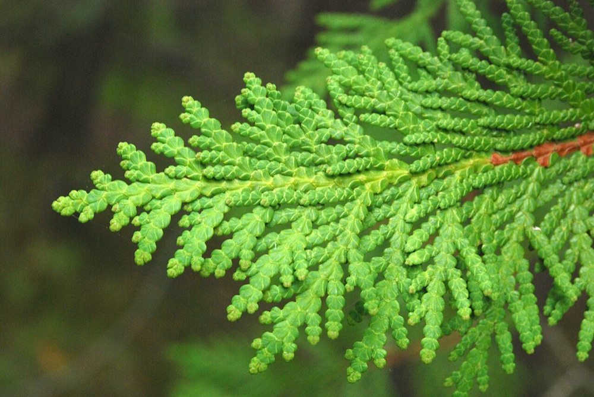
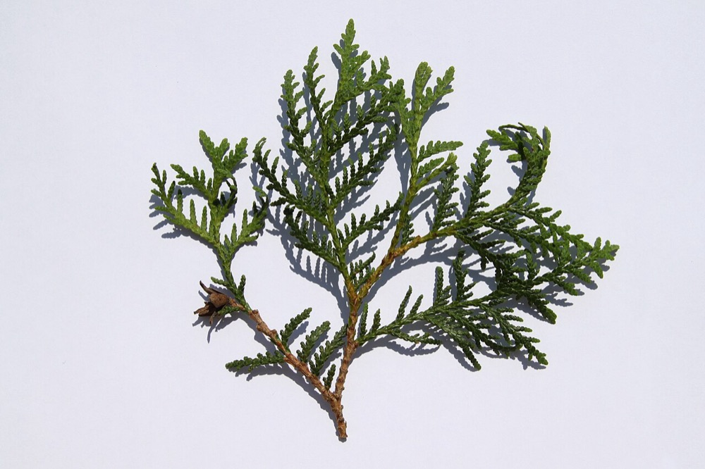

Northern White-cedar
Thuja occidentalis
- Also called
- Arborvitae
- Kind
- tree · Cupressaceae
- Native to Vermont
- yes
- Legal status
- Native; no special legal status found (checked 2026-10-30)
- Look-alikes
- Atlantic white-cedar; Sawara-cedar; Western redcedar; Oriental arborvitae
Pictures



Names
Northern white-cedar, Thuja occidentalis. Also called arborvitae (search summary of the factsheet).
Range and habitat
Native. A small to medium-sized tree shaped like an arrowhead: a pyramid with a broad base and a small, round top, often with several main trunks (Virginia Tech). A search summary of the factsheet says it grows on moist soils, low wet sites and limestone outcrops in northern New England.
How to identify (by season; look-alikes and the key difference)
- Foliage: evergreen and scale-like. The main shoots carry scales about 1/4 inch long with long points; the side shoots are flattened, about 1/8 inch, with short points, forming flat sprays that are green when new and turn brown.
- Cones: about 1/2 inch, oblong, upright on the branches, with leathery red-brown scales that each have a small spine.
- Bark: fibrous and red-brown, weathering to gray, usually with a diamond-shaped pattern.
- Look-alikes: Atlantic white-cedar, sawara-cedar, western redcedar, Oriental arborvitae.
By growth stage (trees: seedling, sapling, pole-size, mature or old; what to look at in each)
| Stage | What to look at | What you see |
|---|---|---|
| Seedling | not in the seedling guide | Not described in the sources read. |
| Sapling and pole-size | foliage, bark | Flattened sprays of scale-like foliage; the factsheet does not describe young bark. |
| Mature and old trees | bark, form | Fibrous red-brown bark weathering to gray; arrowhead-shaped crown, often several trunks. |
| Winter, any age | foliage | Evergreen flattened sprays. |
Through the year
Dates are typical for Vermont and shift with elevation and year; "approximate" means the source gave a season and the dates are a translation of it.
| When | What | Look for | What to do | Dates |
|---|---|---|---|---|
| Nov 1 to Mar 31 | dormant (identify) | Evergreen: scale-like leaves in flattened sprays, green turning brown on older growth; fibrous red-brown bark weathering to gray with a diamond pattern; often several trunks; small upright oblong cones with leathery red-brown scales. | - | approximate |
Signs on the land (tracks, scat, browse, nests, holes, calls)
Deer and snowshoe hare browse it (search summary of the factsheet).
Role in the forest (what it eats, what eats it, what it needs)
Second only to hemlock among softwoods for deer winter cover (Landowner's Guide); ruffed grouse use small softwood patches of cedar, hemlock or spruce-fir for winter cover (White-tailed Deer, Ruffed Grouse, Snowshoe Hare).
What helps it thrive (light, soil, shelter, food and the trees it uses)
- Light: generally shade tolerant, though less than balsam fir or sugar maple; partial light is needed for continued seedling growth (FEIS).
- Soil and water: in lowlands, where there is a strong flow of moderately mineral-rich soil water of near-neutral pH; in uplands, calcareous clays and shallow loam over broken limestone. Higher than normal water levels reduce growth and eventually kill trees. It dominates rich swamp forests and cedar bog and fen complexes, and grows from near sea level to more than 2,000 feet (up to 4,270 feet in the Adirondacks).
- Regeneration: fire prepares a favorable seedbed and seedlings prosper on recently burned sites; it also reproduces by layering under favorable moisture, and invades old fields and openings made by windfall or cutting to form even-aged stands. The review says foresters have not historically regenerated it successfully.
- Deer: one of the best winter browse species for white-tailed deer in the northern Lake States, often overbrowsed, and a source of thermal cover for deer (White-tailed Deer).
Managing for it (habitat practices) and living with it (conflicts and damage)
Not recorded here.
Legal status
No special status found.
Sources
- Virginia Tech Dendrology, Northern white-cedar: https://dendro.cnre.vt.edu/dendrology/syllabus/factsheet.cfm?ID=118 (read 2026-10-30)
- Vermont Fish & Wildlife Department, A Landowner's Guide, deer and grouse chapters
- USDA Forest Service, Fire Effects Information System, Thuja occidentalis: https://www.fs.usda.gov/database/feis/plants/tree/thuocc/all.html (read through a summarizing fetch 2026-11-01)
What this page is based on
Kind of source: mixed (Virginia Tech factsheet; Vermont Landowner's Guide for deer and grouse cover; 'arborvitae' from a search summary of the factsheet)
What was read: Virginia Tech Dendrology factsheet (ID 118) for northern white-cedar, read through a summarizing fetch on 2026-10-30. The factsheet gives no height, no habitat, no cone timing and no young-bark description, and the species is not in the New England seedling guide, so there is no seedling description here. The 'arborvitae' name and habitat (moist soils, low wet sites, limestone) are from a search summary of the factsheet. The calendar has one winter identification window because the sources give no flower or cone months. Habitat needs (light, soil, regeneration, response to cutting) added 2026-11-01 from the USDA Forest Service Fire Effects Information System species review (summarizing fetch); the review is national in scope and the Northeast details are those it names.
Last checked: 2026-10-30
Vermont land and forest reference, built 2026-11-01. Rules and dates here are summaries, not legal advice; dates shift with elevation and year. Photo and recording credits · Note: _reference/US-VT/Species/Northern White-cedar.md